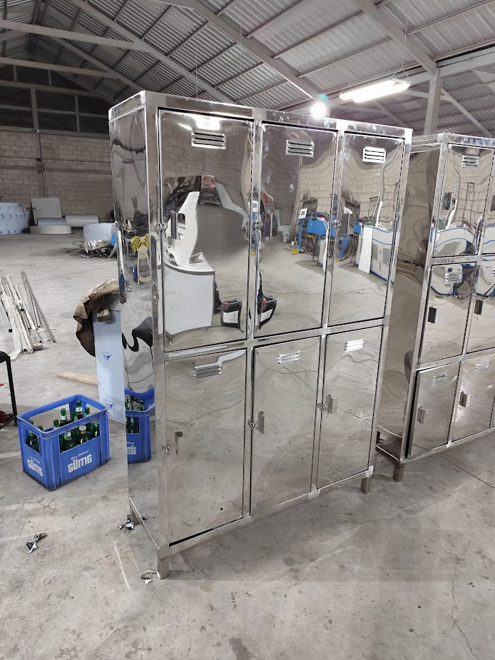

Casilleros Industriales
Organización y seguridad para plantas procesadoras
Orden y Cumplimiento Normativo
Mobiliario diseñado específicamente para vestidores en industrias de alimentos y farmacéuticas. Su diseño con techo inclinado evita la acumulación de polvo y cumple con las normativas HACCP y BPM.
Fabricados en acero inoxidable resistente a la corrosión y limpieza frecuente con químicos industriales.
Ficha Técnica
- Material: Acero Inoxidable AISI 304 / 430
- Módulos: 1, 2, 3 o 4 cuerpos
- Diseño: Techo inclinado antipolvo
- Ventilación: Rejillas troqueladas en puertas
- Seguridad: Aldaba para candado resistente
Galería del Producto

Módulo de Casilleros